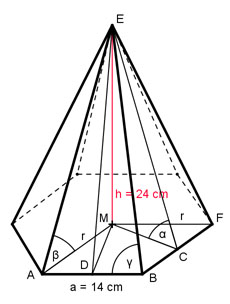

Aufgabe 61 Wie groß sind von einer regelmäßigen sechsseitigen Pyramide mit einer Grundseite a von 14 cm und einer Höhe h von 24 cm der Neigungswinkel α der Seitenflächen, der Neigungswinkel β der Seitenkanten gegen die Grundfläche und der Winkel γ an der Spitze eines Manteldreiecks?

In einem regelmäßigen Sechseck gilt a = r = 14 cm Im Dreieck AME (rechter Winkel bei M): h 24 cm tan β = --- = ------- = 1,7143 --> β = 59,7° r 14 cm Die Grundfläche der Pyramide besteht aus sechs gleich großen gleich- seitigen Dreiecken. Dreieck ADM: (rechter Winkel bei D, Winkel bei M = 30°): DM cos 30° = ----- |*r r DM = r * cos 30° = 14 cm * 0,866 = 12,1 cm Dreieck MCE (Strecke MC = DM, rechter Winkel bei M): h 24 cm tan α = ----- = ----------- = 1,9835 MC 12,1 cm --> α = 63,2° h sin α = ----- |*CE CE CE * sin α = h |:sin α h 24 cm CE = ------- = --------- = 26,9 cm sin α 0,8926 Im Dreieck DBE (rechter Winkel bei D, DE = CE): DE 26,9 cm tan γ = ------ = ----------- = 3,8429 a/2 14/2 cm --> γ = 75,4°